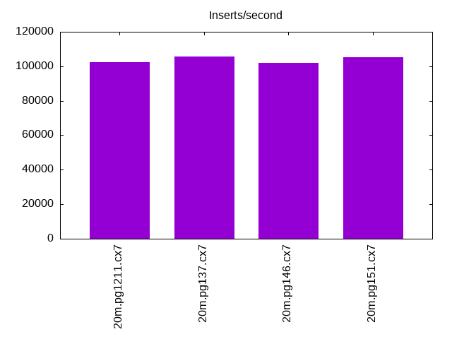
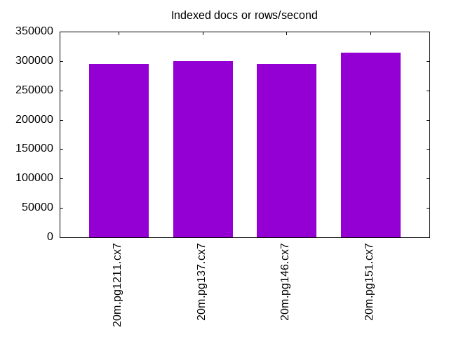
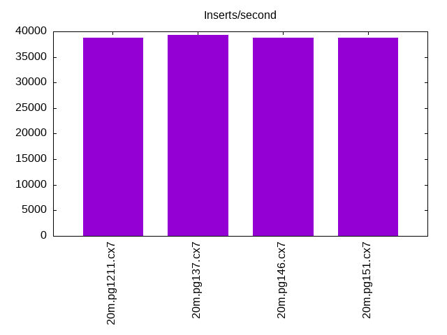
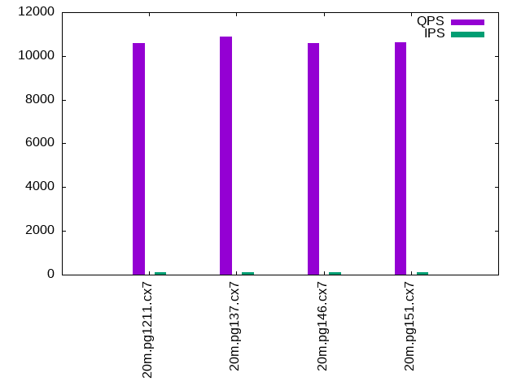
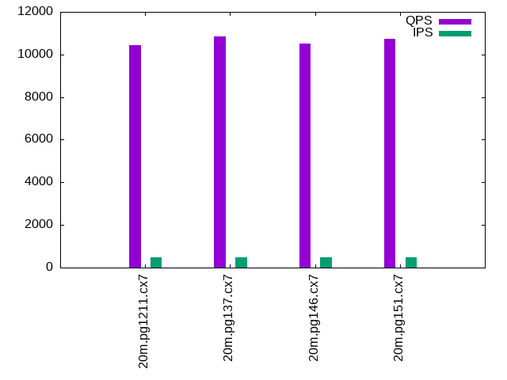
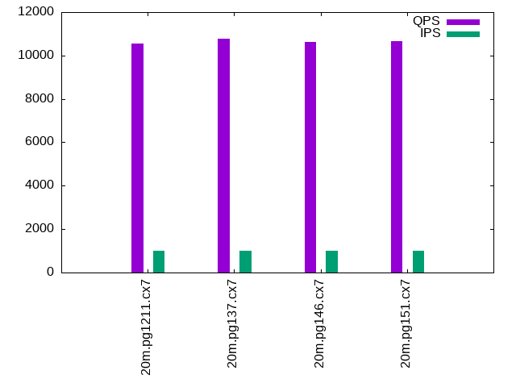

This is a report for the insert benchmark with 20M docs and 1 client(s). It is generated by scripts (bash, awk, sed) and Tufte might not be impressed. An overview of the insert benchmark is here and a short update is here. Below, by DBMS, I mean DBMS+version.config. An example is my8020.c10b40 where my means MySQL, 8020 is version 8.0.20 and c10b40 is the name for the configuration file.
The test server is an Intel NUC with 4 cores, 16G RAM and a Samsung 970 EVO. More details are here. Clients and the DBMS share one server. The per-database configs are in the per-database subdirectories here.
The tested DBMS are:
The numbers are inserts/s for l.i0 and l.i1, indexed docs (or rows) /s for l.x and queries/s for q*.2. The values are the average rate over the entire test for inserts (IPS) and queries (QPS). The range of values for IPS and QPS is split into 3 parts: bottom 25%, middle 50%, top 25%. Values in the bottom 25% have a red background, values in the top 25% have a green background and values in the middle have no color. A gray background is used for values that can be ignored because the DBMS did not sustain the target insert rate. Red backgrounds are not used when the minimum value is within 80% of the max value.
| dbms | l.i0 | l.x | l.i1 | q100.1 | q500.1 | q1000.1 |
|---|---|---|---|---|---|---|
| 20m.pg1211.cx7 | 102564 | 295588 | 38835 | 10575 | 10431 | 10564 |
| 20m.pg137.cx7 | 105820 | 300000 | 39293 | 10883 | 10837 | 10778 |
| 20m.pg146.cx7 | 102041 | 295588 | 38760 | 10580 | 10504 | 10615 |
| 20m.pg151.cx7 | 105263 | 314062 | 38760 | 10623 | 10738 | 10653 |
This lists the average rate of inserts/s for the tests that do inserts concurrent with queries. For such tests the query rate is listed in the table above. The read+write tests are setup so that the insert rate should match the target rate every second. Cells that are not at least 95% of the target have a red background to indicate a failure to satisfy the target.
| dbms | q100.1 | q500.1 | q1000.1 |
|---|---|---|---|
| pg1211.cx7 | 100 | 499 | 999 |
| pg137.cx7 | 100 | 500 | 999 |
| pg146.cx7 | 100 | 500 | 999 |
| pg151.cx7 | 100 | 499 | 999 |
| target | 100 | 500 | 1000 |
l.i0: load without secondary indexes. Graphs for performance per 1-second interval are here.
Average throughput:
Insert response time histogram: each cell has the percentage of responses that take <= the time in the header and max is the max response time in seconds. For the max column values in the top 25% of the range have a red background and in the bottom 25% of the range have a green background. The red background is not used when the min value is within 80% of the max value.
| dbms | 256us | 1ms | 4ms | 16ms | 64ms | 256ms | 1s | 4s | 16s | gt | max |
|---|---|---|---|---|---|---|---|---|---|---|---|
| pg1211.cx7 | 92.346 | 7.654 | 0.004 | ||||||||
| pg137.cx7 | 97.725 | 2.275 | 0.002 | ||||||||
| pg146.cx7 | 91.716 | 8.284 | 0.001 | 0.005 | |||||||
| pg151.cx7 | 97.897 | 2.103 | 0.001 | 0.004 |
Performance metrics for the DBMS listed above. Some are normalized by throughput, others are not. Legend for results is here.
ips qps rps rmbps wps wmbps rpq rkbpq wpi wkbpi csps cpups cspq cpupq dbgb1 dbgb2 rss maxop p50 p99 tag 102564 0 0 0.0 67.6 44.0 0.000 0.000 0.001 0.439 12202 40.6 0.119 16 1.9 5.2 0.0 0.004 103227 93801 20m.pg1211.cx7 105820 0 0 0.0 68.8 44.4 0.000 0.000 0.001 0.430 12641 42.1 0.119 16 1.9 5.2 0.0 0.002 107182 99092 20m.pg137.cx7 102041 0 0 0.0 67.6 44.0 0.000 0.000 0.001 0.442 12224 40.1 0.120 16 1.9 5.2 0.0 0.005 102891 94459 20m.pg146.cx7 105263 0 0 0.0 68.8 44.1 0.000 0.000 0.001 0.429 12596 41.3 0.120 16 1.9 5.2 0.0 0.004 106583 99132 20m.pg151.cx7
l.x: create secondary indexes.
Average throughput:
Performance metrics for the DBMS listed above. Some are normalized by throughput, others are not. Legend for results is here.
ips qps rps rmbps wps wmbps rpq rkbpq wpi wkbpi csps cpups cspq cpupq dbgb1 dbgb2 rss maxop p50 p99 tag 295588 0 0 0.0 55.5 58.8 0.000 0.000 0.000 0.204 1213 23.4 0.004 3 3.7 8.6 0.0 0.002 NA NA 20m.pg1211.cx7 300000 0 0 0.0 60.0 62.4 0.000 0.000 0.000 0.213 1249 23.9 0.004 3 3.7 8.6 0.0 0.002 NA NA 20m.pg137.cx7 295588 0 0 0.0 54.9 58.3 0.000 0.000 0.000 0.202 1195 23.6 0.004 3 3.7 8.6 0.0 0.002 NA NA 20m.pg146.cx7 314062 0 0 0.0 53.0 56.7 0.000 0.000 0.000 0.185 1226 23.8 0.004 3 3.7 8.6 0.0 0.002 NA NA 20m.pg151.cx7
l.i1: continue load after secondary indexes created. Graphs for performance per 1-second interval are here.
Average throughput:
Insert response time histogram: each cell has the percentage of responses that take <= the time in the header and max is the max response time in seconds. For the max column values in the top 25% of the range have a red background and in the bottom 25% of the range have a green background. The red background is not used when the min value is within 80% of the max value.
| dbms | 256us | 1ms | 4ms | 16ms | 64ms | 256ms | 1s | 4s | 16s | gt | max |
|---|---|---|---|---|---|---|---|---|---|---|---|
| pg1211.cx7 | 99.961 | 0.033 | 0.006 | nonzero | 0.072 | ||||||
| pg137.cx7 | 99.969 | 0.026 | 0.004 | 0.001 | 0.075 | ||||||
| pg146.cx7 | 99.977 | 0.021 | 0.002 | 0.027 | |||||||
| pg151.cx7 | 99.968 | 0.028 | 0.003 | 0.042 |
Performance metrics for the DBMS listed above. Some are normalized by throughput, others are not. Legend for results is here.
ips qps rps rmbps wps wmbps rpq rkbpq wpi wkbpi csps cpups cspq cpupq dbgb1 dbgb2 rss maxop p50 p99 tag 38835 0 0 0.0 205.1 66.3 0.000 0.000 0.005 1.747 9797 32.7 0.252 34 8.2 19.5 0.0 0.072 40006 24274 20m.pg1211.cx7 39293 0 0 0.0 212.3 69.0 0.000 0.000 0.005 1.799 9919 32.9 0.252 33 8.2 20.0 0.0 0.075 40306 24172 20m.pg137.cx7 38760 0 0 0.0 166.3 64.6 0.000 0.000 0.004 1.707 9818 32.4 0.253 33 8.2 20.7 1.6 0.027 39808 26631 20m.pg146.cx7 38760 0 0 0.0 162.7 63.2 0.000 0.000 0.004 1.668 9752 32.4 0.252 33 8.2 20.3 0.0 0.042 40006 23323 20m.pg151.cx7
q100.1: range queries with 100 insert/s per client. Graphs for performance per 1-second interval are here.
Average throughput:
Query response time histogram: each cell has the percentage of responses that take <= the time in the header and max is the max response time in seconds. For max values in the top 25% of the range have a red background and in the bottom 25% of the range have a green background. The red background is not used when the min value is within 80% of the max value.
| dbms | 256us | 1ms | 4ms | 16ms | 64ms | 256ms | 1s | 4s | 16s | gt | max |
|---|---|---|---|---|---|---|---|---|---|---|---|
| pg1211.cx7 | 99.995 | 0.004 | 0.001 | nonzero | 0.004 | ||||||
| pg137.cx7 | 99.995 | 0.004 | 0.001 | 0.003 | |||||||
| pg146.cx7 | 99.995 | 0.004 | 0.001 | 0.003 | |||||||
| pg151.cx7 | 99.996 | 0.004 | nonzero | nonzero | 0.004 |
Insert response time histogram: each cell has the percentage of responses that take <= the time in the header and max is the max response time in seconds. For max values in the top 25% of the range have a red background and in the bottom 25% of the range have a green background. The red background is not used when the min value is within 80% of the max value.
| dbms | 256us | 1ms | 4ms | 16ms | 64ms | 256ms | 1s | 4s | 16s | gt | max |
|---|---|---|---|---|---|---|---|---|---|---|---|
| pg1211.cx7 | 99.972 | 0.028 | 0.005 | ||||||||
| pg137.cx7 | 99.986 | 0.014 | 0.005 | ||||||||
| pg146.cx7 | 99.958 | 0.042 | 0.006 | ||||||||
| pg151.cx7 | 99.986 | 0.014 | 0.006 |
Performance metrics for the DBMS listed above. Some are normalized by throughput, others are not. Legend for results is here.
ips qps rps rmbps wps wmbps rpq rkbpq wpi wkbpi csps cpups cspq cpupq dbgb1 dbgb2 rss maxop p50 p99 tag 100 10575 0 0.0 199.5 5.4 0.000 0.000 1.997 55.142 40622 25.7 3.841 97 8.2 14.2 0.0 0.004 10573 10452 20m.pg1211.cx7 100 10883 0 0.0 198.4 4.7 0.000 0.000 1.988 48.231 41803 25.7 3.841 94 8.2 13.8 0.0 0.003 10884 10756 20m.pg137.cx7 100 10580 0 0.0 191.5 4.9 0.000 0.000 1.918 50.337 40607 25.7 3.838 97 8.2 15.9 0.0 0.003 10581 10453 20m.pg146.cx7 100 10623 0 0.0 192.4 4.9 0.000 0.000 1.928 50.013 40743 25.7 3.836 97 8.2 15.9 0.0 0.004 10628 10484 20m.pg151.cx7
q500.1: range queries with 500 insert/s per client. Graphs for performance per 1-second interval are here.
Average throughput:
Query response time histogram: each cell has the percentage of responses that take <= the time in the header and max is the max response time in seconds. For max values in the top 25% of the range have a red background and in the bottom 25% of the range have a green background. The red background is not used when the min value is within 80% of the max value.
| dbms | 256us | 1ms | 4ms | 16ms | 64ms | 256ms | 1s | 4s | 16s | gt | max |
|---|---|---|---|---|---|---|---|---|---|---|---|
| pg1211.cx7 | 99.980 | 0.015 | 0.005 | nonzero | 0.006 | ||||||
| pg137.cx7 | 99.982 | 0.014 | 0.004 | nonzero | 0.005 | ||||||
| pg146.cx7 | 99.975 | 0.018 | 0.007 | nonzero | 0.005 | ||||||
| pg151.cx7 | 99.976 | 0.017 | 0.007 | nonzero | 0.006 |
Insert response time histogram: each cell has the percentage of responses that take <= the time in the header and max is the max response time in seconds. For max values in the top 25% of the range have a red background and in the bottom 25% of the range have a green background. The red background is not used when the min value is within 80% of the max value.
| dbms | 256us | 1ms | 4ms | 16ms | 64ms | 256ms | 1s | 4s | 16s | gt | max |
|---|---|---|---|---|---|---|---|---|---|---|---|
| pg1211.cx7 | 99.969 | 0.031 | 0.006 | ||||||||
| pg137.cx7 | 99.967 | 0.033 | 0.006 | ||||||||
| pg146.cx7 | 99.964 | 0.036 | 0.006 | ||||||||
| pg151.cx7 | 99.947 | 0.053 | 0.007 |
Performance metrics for the DBMS listed above. Some are normalized by throughput, others are not. Legend for results is here.
ips qps rps rmbps wps wmbps rpq rkbpq wpi wkbpi csps cpups cspq cpupq dbgb1 dbgb2 rss maxop p50 p99 tag 499 10431 0 0.0 334.6 12.4 0.000 0.000 0.670 25.515 40219 26.1 3.856 100 8.7 12.1 0.0 0.006 10437 10181 20m.pg1211.cx7 500 10837 0 0.0 337.6 12.5 0.000 0.000 0.676 25.608 41710 26.1 3.849 96 8.7 12.0 0.0 0.005 10836 10692 20m.pg137.cx7 500 10504 0 0.0 339.4 11.8 0.000 0.000 0.680 24.130 40416 26.1 3.848 99 8.7 12.9 0.0 0.005 10501 10377 20m.pg146.cx7 499 10738 0 0.0 339.5 11.8 0.000 0.000 0.680 24.139 41286 26.1 3.845 97 8.7 12.9 0.0 0.006 10740 10612 20m.pg151.cx7
q1000.1: range queries with 1000 insert/s per client. Graphs for performance per 1-second interval are here.
Average throughput:
Query response time histogram: each cell has the percentage of responses that take <= the time in the header and max is the max response time in seconds. For max values in the top 25% of the range have a red background and in the bottom 25% of the range have a green background. The red background is not used when the min value is within 80% of the max value.
| dbms | 256us | 1ms | 4ms | 16ms | 64ms | 256ms | 1s | 4s | 16s | gt | max |
|---|---|---|---|---|---|---|---|---|---|---|---|
| pg1211.cx7 | 99.951 | 0.037 | 0.012 | nonzero | 0.015 | ||||||
| pg137.cx7 | 99.953 | 0.035 | 0.012 | nonzero | 0.015 | ||||||
| pg146.cx7 | 99.945 | 0.040 | 0.015 | nonzero | 0.008 | ||||||
| pg151.cx7 | 99.947 | 0.038 | 0.015 | nonzero | 0.007 |
Insert response time histogram: each cell has the percentage of responses that take <= the time in the header and max is the max response time in seconds. For max values in the top 25% of the range have a red background and in the bottom 25% of the range have a green background. The red background is not used when the min value is within 80% of the max value.
| dbms | 256us | 1ms | 4ms | 16ms | 64ms | 256ms | 1s | 4s | 16s | gt | max |
|---|---|---|---|---|---|---|---|---|---|---|---|
| pg1211.cx7 | 98.428 | 1.410 | 0.163 | 0.035 | |||||||
| pg137.cx7 | 98.517 | 1.328 | 0.156 | 0.035 | |||||||
| pg146.cx7 | 99.037 | 0.958 | 0.004 | 0.035 | |||||||
| pg151.cx7 | 99.076 | 0.919 | 0.004 | 0.035 |
Performance metrics for the DBMS listed above. Some are normalized by throughput, others are not. Legend for results is here.
ips qps rps rmbps wps wmbps rpq rkbpq wpi wkbpi csps cpups cspq cpupq dbgb1 dbgb2 rss maxop p50 p99 tag 999 10564 7 0.1 382.9 19.0 0.001 0.006 0.383 19.479 40839 26.7 3.866 101 10.6 14.6 0.0 0.015 10565 10405 20m.pg1211.cx7 999 10778 7 0.1 384.6 19.0 0.001 0.006 0.385 19.511 41661 26.8 3.865 99 10.6 14.6 0.0 0.015 10788 10613 20m.pg137.cx7 999 10615 7 0.1 413.2 17.4 0.001 0.006 0.414 17.864 40983 26.7 3.861 101 10.6 15.4 0.0 0.008 10613 10469 20m.pg146.cx7 999 10653 7 0.1 413.7 17.4 0.001 0.006 0.414 17.877 41108 26.8 3.859 101 10.6 15.4 0.0 0.007 10660 10517 20m.pg151.cx7
l.i0: load without secondary indexes
Performance metrics for all DBMS, not just the ones listed above. Some are normalized by throughput, others are not. Legend for results is here.
ips qps rps rmbps wps wmbps rpq rkbpq wpi wkbpi csps cpups cspq cpupq dbgb1 dbgb2 rss maxop p50 p99 tag 102564 0 0 0.0 67.6 44.0 0.000 0.000 0.001 0.439 12202 40.6 0.119 16 1.9 5.2 0.0 0.004 103227 93801 20m.pg1211.cx7 105820 0 0 0.0 68.8 44.4 0.000 0.000 0.001 0.430 12641 42.1 0.119 16 1.9 5.2 0.0 0.002 107182 99092 20m.pg137.cx7 102041 0 0 0.0 67.6 44.0 0.000 0.000 0.001 0.442 12224 40.1 0.120 16 1.9 5.2 0.0 0.005 102891 94459 20m.pg146.cx7 105263 0 0 0.0 68.8 44.1 0.000 0.000 0.001 0.429 12596 41.3 0.120 16 1.9 5.2 0.0 0.004 106583 99132 20m.pg151.cx7
l.x: create secondary indexes
Performance metrics for all DBMS, not just the ones listed above. Some are normalized by throughput, others are not. Legend for results is here.
ips qps rps rmbps wps wmbps rpq rkbpq wpi wkbpi csps cpups cspq cpupq dbgb1 dbgb2 rss maxop p50 p99 tag 295588 0 0 0.0 55.5 58.8 0.000 0.000 0.000 0.204 1213 23.4 0.004 3 3.7 8.6 0.0 0.002 NA NA 20m.pg1211.cx7 300000 0 0 0.0 60.0 62.4 0.000 0.000 0.000 0.213 1249 23.9 0.004 3 3.7 8.6 0.0 0.002 NA NA 20m.pg137.cx7 295588 0 0 0.0 54.9 58.3 0.000 0.000 0.000 0.202 1195 23.6 0.004 3 3.7 8.6 0.0 0.002 NA NA 20m.pg146.cx7 314062 0 0 0.0 53.0 56.7 0.000 0.000 0.000 0.185 1226 23.8 0.004 3 3.7 8.6 0.0 0.002 NA NA 20m.pg151.cx7
l.i1: continue load after secondary indexes created
Performance metrics for all DBMS, not just the ones listed above. Some are normalized by throughput, others are not. Legend for results is here.
ips qps rps rmbps wps wmbps rpq rkbpq wpi wkbpi csps cpups cspq cpupq dbgb1 dbgb2 rss maxop p50 p99 tag 38835 0 0 0.0 205.1 66.3 0.000 0.000 0.005 1.747 9797 32.7 0.252 34 8.2 19.5 0.0 0.072 40006 24274 20m.pg1211.cx7 39293 0 0 0.0 212.3 69.0 0.000 0.000 0.005 1.799 9919 32.9 0.252 33 8.2 20.0 0.0 0.075 40306 24172 20m.pg137.cx7 38760 0 0 0.0 166.3 64.6 0.000 0.000 0.004 1.707 9818 32.4 0.253 33 8.2 20.7 1.6 0.027 39808 26631 20m.pg146.cx7 38760 0 0 0.0 162.7 63.2 0.000 0.000 0.004 1.668 9752 32.4 0.252 33 8.2 20.3 0.0 0.042 40006 23323 20m.pg151.cx7
q100.1: range queries with 100 insert/s per client
Performance metrics for all DBMS, not just the ones listed above. Some are normalized by throughput, others are not. Legend for results is here.
ips qps rps rmbps wps wmbps rpq rkbpq wpi wkbpi csps cpups cspq cpupq dbgb1 dbgb2 rss maxop p50 p99 tag 100 10575 0 0.0 199.5 5.4 0.000 0.000 1.997 55.142 40622 25.7 3.841 97 8.2 14.2 0.0 0.004 10573 10452 20m.pg1211.cx7 100 10883 0 0.0 198.4 4.7 0.000 0.000 1.988 48.231 41803 25.7 3.841 94 8.2 13.8 0.0 0.003 10884 10756 20m.pg137.cx7 100 10580 0 0.0 191.5 4.9 0.000 0.000 1.918 50.337 40607 25.7 3.838 97 8.2 15.9 0.0 0.003 10581 10453 20m.pg146.cx7 100 10623 0 0.0 192.4 4.9 0.000 0.000 1.928 50.013 40743 25.7 3.836 97 8.2 15.9 0.0 0.004 10628 10484 20m.pg151.cx7
q500.1: range queries with 500 insert/s per client
Performance metrics for all DBMS, not just the ones listed above. Some are normalized by throughput, others are not. Legend for results is here.
ips qps rps rmbps wps wmbps rpq rkbpq wpi wkbpi csps cpups cspq cpupq dbgb1 dbgb2 rss maxop p50 p99 tag 499 10431 0 0.0 334.6 12.4 0.000 0.000 0.670 25.515 40219 26.1 3.856 100 8.7 12.1 0.0 0.006 10437 10181 20m.pg1211.cx7 500 10837 0 0.0 337.6 12.5 0.000 0.000 0.676 25.608 41710 26.1 3.849 96 8.7 12.0 0.0 0.005 10836 10692 20m.pg137.cx7 500 10504 0 0.0 339.4 11.8 0.000 0.000 0.680 24.130 40416 26.1 3.848 99 8.7 12.9 0.0 0.005 10501 10377 20m.pg146.cx7 499 10738 0 0.0 339.5 11.8 0.000 0.000 0.680 24.139 41286 26.1 3.845 97 8.7 12.9 0.0 0.006 10740 10612 20m.pg151.cx7
q1000.1: range queries with 1000 insert/s per client
Performance metrics for all DBMS, not just the ones listed above. Some are normalized by throughput, others are not. Legend for results is here.
ips qps rps rmbps wps wmbps rpq rkbpq wpi wkbpi csps cpups cspq cpupq dbgb1 dbgb2 rss maxop p50 p99 tag 999 10564 7 0.1 382.9 19.0 0.001 0.006 0.383 19.479 40839 26.7 3.866 101 10.6 14.6 0.0 0.015 10565 10405 20m.pg1211.cx7 999 10778 7 0.1 384.6 19.0 0.001 0.006 0.385 19.511 41661 26.8 3.865 99 10.6 14.6 0.0 0.015 10788 10613 20m.pg137.cx7 999 10615 7 0.1 413.2 17.4 0.001 0.006 0.414 17.864 40983 26.7 3.861 101 10.6 15.4 0.0 0.008 10613 10469 20m.pg146.cx7 999 10653 7 0.1 413.7 17.4 0.001 0.006 0.414 17.877 41108 26.8 3.859 101 10.6 15.4 0.0 0.007 10660 10517 20m.pg151.cx7
Insert response time histogram
256us 1ms 4ms 16ms 64ms 256ms 1s 4s 16s gt max tag 0.000 92.346 7.654 0.000 0.000 0.000 0.000 0.000 0.000 0.000 0.004 pg1211.cx7 0.000 97.725 2.275 0.000 0.000 0.000 0.000 0.000 0.000 0.000 0.002 pg137.cx7 0.000 91.716 8.284 0.001 0.000 0.000 0.000 0.000 0.000 0.000 0.005 pg146.cx7 0.000 97.897 2.103 0.001 0.000 0.000 0.000 0.000 0.000 0.000 0.004 pg151.cx7
TODO - determine whether there is data for create index response time
Insert response time histogram
256us 1ms 4ms 16ms 64ms 256ms 1s 4s 16s gt max tag 0.000 0.000 99.961 0.033 0.006 nonzero 0.000 0.000 0.000 0.000 0.072 pg1211.cx7 0.000 0.000 99.969 0.026 0.004 0.001 0.000 0.000 0.000 0.000 0.075 pg137.cx7 0.000 0.000 99.977 0.021 0.002 0.000 0.000 0.000 0.000 0.000 0.027 pg146.cx7 0.000 0.000 99.968 0.028 0.003 0.000 0.000 0.000 0.000 0.000 0.042 pg151.cx7
Query response time histogram
256us 1ms 4ms 16ms 64ms 256ms 1s 4s 16s gt max tag 99.995 0.004 0.001 nonzero 0.000 0.000 0.000 0.000 0.000 0.000 0.004 pg1211.cx7 99.995 0.004 0.001 0.000 0.000 0.000 0.000 0.000 0.000 0.000 0.003 pg137.cx7 99.995 0.004 0.001 0.000 0.000 0.000 0.000 0.000 0.000 0.000 0.003 pg146.cx7 99.996 0.004 nonzero nonzero 0.000 0.000 0.000 0.000 0.000 0.000 0.004 pg151.cx7
Insert response time histogram
256us 1ms 4ms 16ms 64ms 256ms 1s 4s 16s gt max tag 0.000 0.000 99.972 0.028 0.000 0.000 0.000 0.000 0.000 0.000 0.005 pg1211.cx7 0.000 0.000 99.986 0.014 0.000 0.000 0.000 0.000 0.000 0.000 0.005 pg137.cx7 0.000 0.000 99.958 0.042 0.000 0.000 0.000 0.000 0.000 0.000 0.006 pg146.cx7 0.000 0.000 99.986 0.014 0.000 0.000 0.000 0.000 0.000 0.000 0.006 pg151.cx7
Query response time histogram
256us 1ms 4ms 16ms 64ms 256ms 1s 4s 16s gt max tag 99.980 0.015 0.005 nonzero 0.000 0.000 0.000 0.000 0.000 0.000 0.006 pg1211.cx7 99.982 0.014 0.004 nonzero 0.000 0.000 0.000 0.000 0.000 0.000 0.005 pg137.cx7 99.975 0.018 0.007 nonzero 0.000 0.000 0.000 0.000 0.000 0.000 0.005 pg146.cx7 99.976 0.017 0.007 nonzero 0.000 0.000 0.000 0.000 0.000 0.000 0.006 pg151.cx7
Insert response time histogram
256us 1ms 4ms 16ms 64ms 256ms 1s 4s 16s gt max tag 0.000 0.000 99.969 0.031 0.000 0.000 0.000 0.000 0.000 0.000 0.006 pg1211.cx7 0.000 0.000 99.967 0.033 0.000 0.000 0.000 0.000 0.000 0.000 0.006 pg137.cx7 0.000 0.000 99.964 0.036 0.000 0.000 0.000 0.000 0.000 0.000 0.006 pg146.cx7 0.000 0.000 99.947 0.053 0.000 0.000 0.000 0.000 0.000 0.000 0.007 pg151.cx7
Query response time histogram
256us 1ms 4ms 16ms 64ms 256ms 1s 4s 16s gt max tag 99.951 0.037 0.012 nonzero 0.000 0.000 0.000 0.000 0.000 0.000 0.015 pg1211.cx7 99.953 0.035 0.012 nonzero 0.000 0.000 0.000 0.000 0.000 0.000 0.015 pg137.cx7 99.945 0.040 0.015 nonzero 0.000 0.000 0.000 0.000 0.000 0.000 0.008 pg146.cx7 99.947 0.038 0.015 nonzero 0.000 0.000 0.000 0.000 0.000 0.000 0.007 pg151.cx7
Insert response time histogram
256us 1ms 4ms 16ms 64ms 256ms 1s 4s 16s gt max tag 0.000 0.000 98.428 1.410 0.163 0.000 0.000 0.000 0.000 0.000 0.035 pg1211.cx7 0.000 0.000 98.517 1.328 0.156 0.000 0.000 0.000 0.000 0.000 0.035 pg137.cx7 0.000 0.000 99.037 0.958 0.004 0.000 0.000 0.000 0.000 0.000 0.035 pg146.cx7 0.000 0.000 99.076 0.919 0.004 0.000 0.000 0.000 0.000 0.000 0.035 pg151.cx7